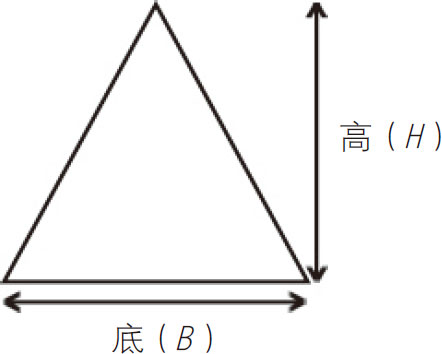
三角形：面积＝ BH
BH
（BH
＝底×高）
■几何可分为：
欧氏几何学，涉及线、圆、三角形等图形；立体几何涉及立方体、棱柱和金字塔等三维物体。
几何学是关于线条、形状、角度、空间以及它们的属性的学科。
■常见多边形的名称和边的数目：
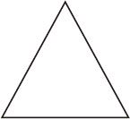
三角形，3条边
四边形，4条边
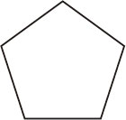
五边形，5条边
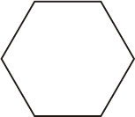
六边形，6条边
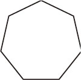
七边形，7条边
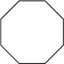
八边形，8条边
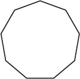
九边形，9条边
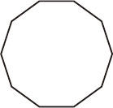
十边形，10条边
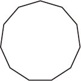
十一边形，11边形
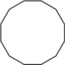
十二边形，12边形
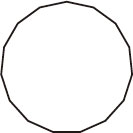
十三边形，13条边
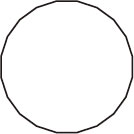
十四边形，14条边
■多边形面积的计算公式：

三角形：面积＝
BH
（BH
＝底×高）
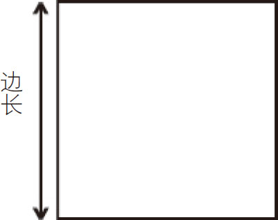
正方形：面积＝边长的平方
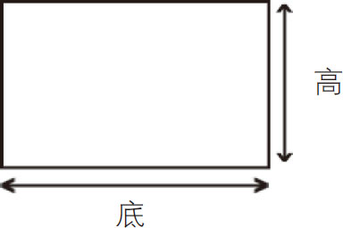
矩形（长方形）：面积＝底×高
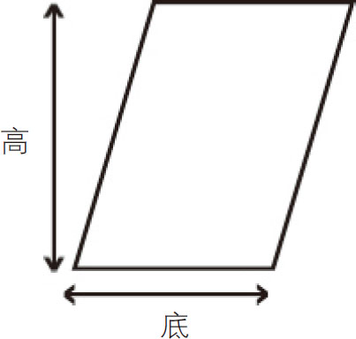
平行四边形或菱形：面积＝底×高
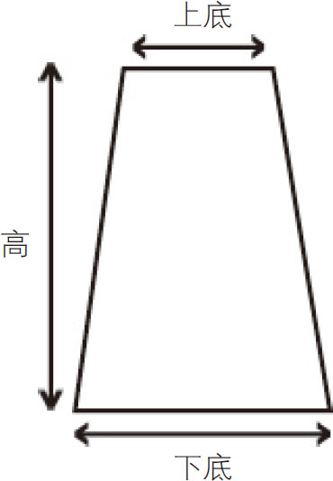
梯形：
面积＝
×高（下底＋上底）
（面积＝［底1＋底2］×垂直高度×
）
■立体几何图形表面积和体积的计算公式：
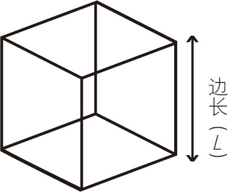
立方体：
表面积＝6L
2
（6×1条边长的平方）
体积＝L
3
（1条边长的立方）
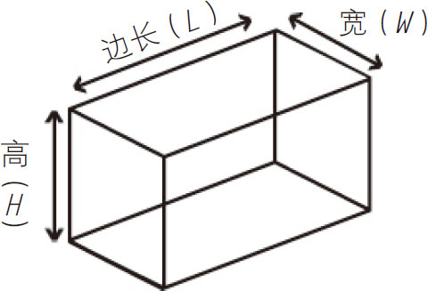
长方体：
表面积＝2（LH＋LW＋HW
）
体积＝长×宽×高
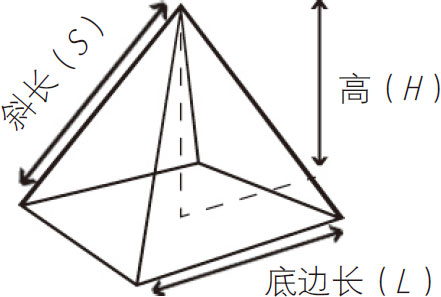
方形金字塔：
表面积＝2HS
＋L
2
体积＝
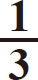
L 2 H
圆柱体：
表面积＝2πR
2
＋2πRH
体积＝πR
2
H
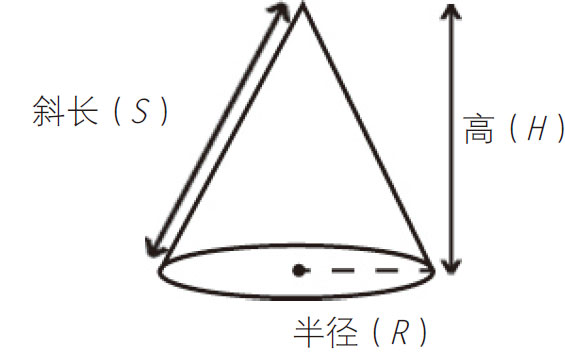
圆锥体
表面积＝πRS
＋πR
2
体积＝
πR
2
H
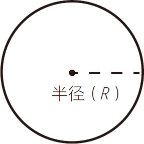
球（体）：
表面积＝4πR
2
体积＝
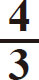
πR 3瑞士数学家莱昂哈德·欧拉发现了扁平无曲线的平边几何图形的共同特征——它们都遵循这一公式：
V –E ＋F ＝2
V ＝顶点数
（这是多边的交汇点）
E ＝边数
F ＝面数
（它是边的表面积）
无论一个多面体的形状是什么样，公式的结果总是2（除了计算机生成的特殊形状），见图3-1。
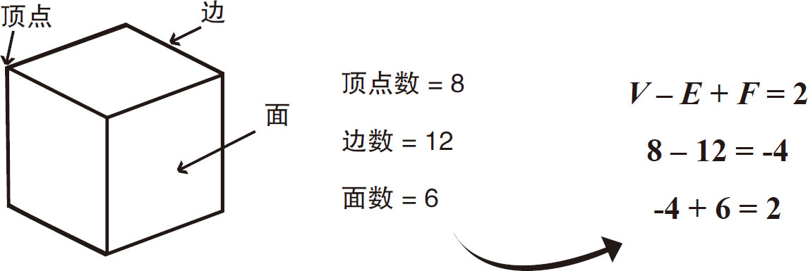
图3-1
图3-2是一个四面体，它有4个顶点、6条边、4个面。计算的结果是：
4–6＋4＝2
图3-3、图3-4、图3-5分别展示了不同形状的多面体，它们都遵循欧拉多面体公式。
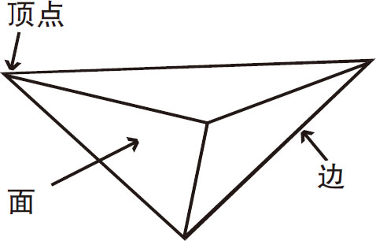
图3-2
V
–E
＋F
＝2
4–6＋4＝2
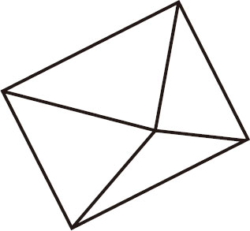
图3-3
V
–E
＋F
＝2
5–8＋5＝2
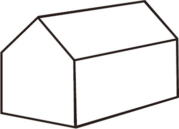
图3-4
V
–E
＋F
＝2
10–15＋7＝2
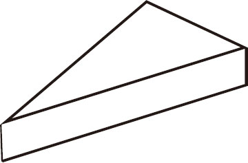
图3-5
V
–E
＋F
＝2
6–9＋5＝2
-3＋5＝2
你可以用一块奶酪来演示欧拉多面体公式。
需要准备的东西：
►奶酪块
►小刀

沿着奶酪块对角线的方向切去一端，见图3-6。
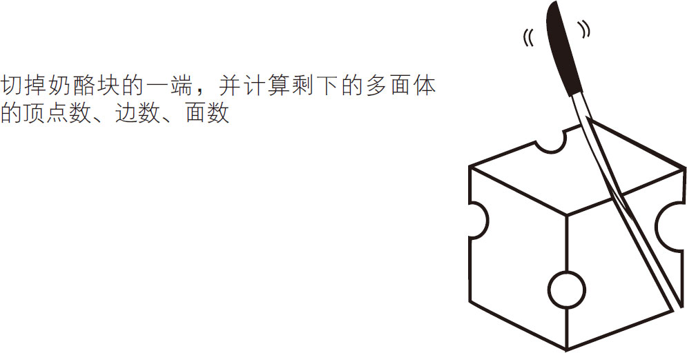
图3-6
计算剩余的顶点、边、面，用欧拉多面体公式写出你的结果。[此书 分 享微 信jnztxy]
不断地从奶酪块上沿对角线切下一部分，你会发现每次剩下的多面体都会遵循这个公式，见图3-7、图3-8、图3-9、图3-10。
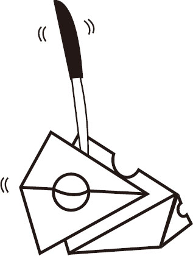 |
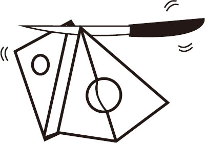 |
| 图3-7 | 图3-8 |
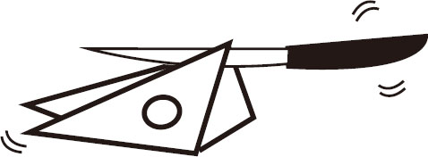 |

|
| 图3-9 | 图3-10 |